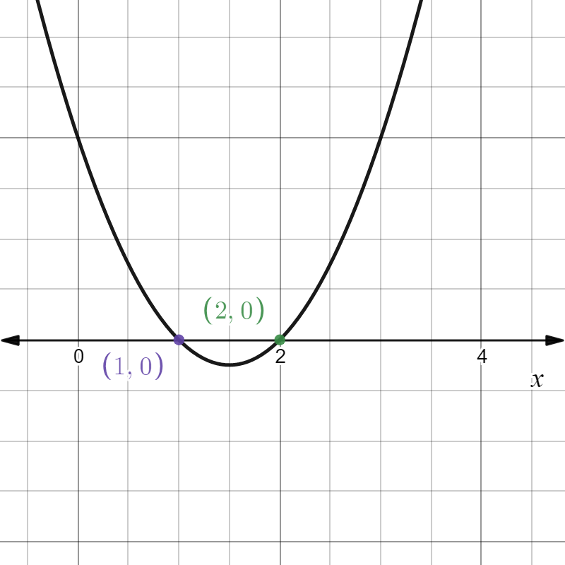
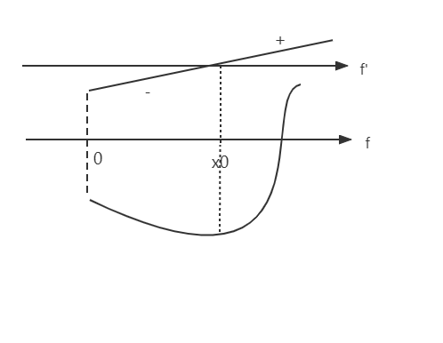

§ 3.4 \S 3.4 §3.4 一、单调性
定理1：f f f I I I f f f ⇔ f ′ ≥ 0 ( f ′ ≤ 0 ) \Leftrightarrow f'\ge 0(f'\le 0) ⇔ f ′ ≥ 0 ( f ′ ≤ 0 )
证
⇒ \Rightarrow ⇒ x 1 < x 2 ∈ I f ( x 1 ) ≤ f ( x 2 ) x_1\lt x_2\in I\quad f(x_1)\le f(x_2) x 1 < x 2 ∈ I f ( x 1 ) ≤ f ( x 2 )
f ′ ( x ) = lim Δ x → 0 f ( x + Δ x ) − f ( x ) Δ x ≥ 0 \displaystyle f'(x)=\lim_{\Delta x\to 0}\dfrac{f(x+\Delta x)-f(x)}{\Delta x}\ge 0 f ′ ( x ) = Δ x → 0 lim Δ x f ( x + Δ x ) − f ( x ) ≥ 0
Δ x > 0 \Delta x\gt 0 Δ x > 0 f ( x + Δ x ) ≥ f ( x ) f(x+\Delta x)\ge f(x) f ( x + Δ x ) ≥ f ( x )
Δ x < 0 \Delta x\lt 0 Δ x < 0 f ( x + Δ x ) ≤ f ( x ) f(x+\Delta x)\le f(x) f ( x + Δ x ) ≤ f ( x )
⇐ \Leftarrow ⇐ f ′ ≥ 0 f'\ge 0 f ′ ≥ 0 x 1 < x 2 ∈ I x_1\lt x_2\in I x 1 < x 2 ∈ I f ( x 2 ) − f ( x 1 ) ) x 2 − x 1 = f ′ ( ξ ) ≥ 0 , ξ ∈ ( x 1 , x 2 ) \dfrac{f(x_2)-f(x_1))}{x_2-x_1}=f'(\xi)\ge 0,\xi \in (x_1,x_2) x 2 − x 1 f ( x 2 ) − f ( x 1 )) = f ′ ( ξ ) ≥ 0 , ξ ∈ ( x 1 , x 2 )
从而 f ( x 1 ) ≤ f ( x 2 ) f(x_1)\le f(x_2) f ( x 1 ) ≤ f ( x 2 ) f ( x ) f(x) f ( x ) I I I f ′ ≤ 0 f'\le 0 f ′ ≤ 0
推论：
f ′ ( x ) > 0 ⇒ f ( x ) f'(x)\gt 0 \Rightarrow f(x) f ′ ( x ) > 0 ⇒ f ( x ) I I I f ′ ( x ) < 0 ⇒ f ( x ) f'(x)\lt 0 \Rightarrow f(x) f ′ ( x ) < 0 ⇒ f ( x ) I I I
证
x 1 < x 2 ⇒ f ( x 1 ) < f ( x 2 ) x_1\lt x_2\Rightarrow f(x_1)\lt f(x_2) x 1 < x 2 ⇒ f ( x 1 ) < f ( x 2 )
若x 1 < x 2 f ( x 1 ) = f ( x 2 ) x_1\lt x_2\quad f(x_1)=f(x_2) x 1 < x 2 f ( x 1 ) = f ( x 2 ) ∃ ξ ∈ ( x 1 , x 2 ) f ′ ( ξ ) = 0 \exists \xi \in(x_1,x_2)\quad f'(\xi)=0 ∃ ξ ∈ ( x 1 , x 2 ) f ′ ( ξ ) = 0
定理2：f ( x ) f(x) f ( x ) ( a , b ) (a,b) ( a , b ) f ( x ) f(x) f ( x ) ⇔ \Leftrightarrow ⇔
∀ x ∈ ( a , b ) f ′ ( x ) > 0 \forall x\in (a,b) \quad f'(x)\gt 0 ∀ x ∈ ( a , b ) f ′ ( x ) > 0 在 ( a , b ) (a,b) ( a , b ) f ′ ( x ) ≠ 0 f'(x)\ne 0 f ′ ( x ) = 0
例题
求 f ( x ) = 3 x − x 3 f(x)=3x-x^3 f ( x ) = 3 x − x 3
f ( x ) f(x) f ( x ) f ′ ( x ) = 3 − 3 x 2 f'(x)=3-3x^2 f ′ ( x ) = 3 − 3 x 2
令 f ′ ( x ) = 0 f'(x)=0 f ′ ( x ) = 0 x = ± 1 x=\pm 1 x = ± 1
( − ∞ , − 1 ) (-\infty,-1) ( − ∞ , − 1 ) − 1 -1 − 1 ( − 1 , 1 ) (-1,1) ( − 1 , 1 ) 1 1 1 ( 1 , + ∞ ) (1,+\infty) ( 1 , + ∞ )
一阶导正负
-
0
+
0
-
函数增减性
↓
↑
↓
∴ \therefore ∴ [ − 1 , 1 ] [-1,1] [ − 1 , 1 ] ( − ∞ , − 1 ] ∪ [ 1 , + ∞ ) (-\infty,-1]\cup [1,+\infty) ( − ∞ , − 1 ] ∪ [ 1 , + ∞ )
求 f ( x ) = x 2 3 f(x)=x^\frac{2}{3} f ( x ) = x 3 2
f ( x ) f(x) f ( x ) f ′ ( x ) = 2 3 x − 1 3 f'(x)=\dfrac{2}{3}x^{-\frac{1}{3}} f ′ ( x ) = 3 2 x − 3 1
( − ∞ , 0 ) (-\infty,0) ( − ∞ , 0 ) 0 0 0 ( 0 , + ∞ ) (0,+\infty) ( 0 , + ∞ )
一阶导正负
-
不可导
+
函数增减性
↓
/
↑
∴ \therefore ∴ [ 0 , + ∞ ) [0,+\infty) [ 0 , + ∞ ) ( − ∞ , 0 ] (-\infty,0] ( − ∞ , 0 ]
一般分界点为驻点、不可导点
证明 sin x > x − x 3 3 ! ( x > 0 ) \sin x \gt x-\dfrac{x^3}{3!}(x\gt 0) sin x > x − 3 ! x 3 ( x > 0 )
证：令 f ( x ) = sin x − x + x 3 6 f(x)=\sin x-x+\dfrac{x^3}{6} f ( x ) = sin x − x + 6 x 3
f ′ ( x ) = cos x − 1 + 1 2 x 2 f'(x)=\cos x-1+\dfrac{1}{2}x^2 f ′ ( x ) = cos x − 1 + 2 1 x 2
∵ f ′ ′ ( x ) = − sin x + x > 0 \because f''(x)=-\sin x+x\gt 0 ∵ f ′′ ( x ) = − sin x + x > 0
∴ f ′ ( x ) > f ′ ( 0 ) = 0 \therefore f'(x)\gt f'(0)=0 ∴ f ′ ( x ) > f ′ ( 0 ) = 0
∴ f ( x ) > f ( 0 ) = 0 \therefore f(x)\gt f(0)=0 ∴ f ( x ) > f ( 0 ) = 0 sin x > x − x 3 3 ! \sin x\gt x-\dfrac{x^3}{3!} sin x > x − 3 ! x 3
二、极值和最值
定义：∀ x ∈ U ( x 0 ) \forall x\in U(x_0) ∀ x ∈ U ( x 0 ) f ( x ) ≥ f ( x 0 ) f(x)\ge f(x_0) f ( x ) ≥ f ( x 0 ) f ( x 0 ) f(x_0) f ( x 0 ) 极小值 （先减后增），若 f ( x ) ≤ f ( x 0 ) f(x)\le f(x_0) f ( x ) ≤ f ( x 0 ) f ( x 0 ) f(x_0) f ( x 0 ) 极大值 （先增后减）
定理1[极值第一充分条件]：f ( x ) f(x) f ( x ) x 0 x_0 x 0 U ∘ ( x 0 ) \overset{\circ}{U}(x_0) U ∘ ( x 0 )
当 x ∈ ( x 0 − δ , x 0 ) x\in (x_0-\delta ,x_0) x ∈ ( x 0 − δ , x 0 ) f ′ ( x ) ≤ 0 f'(x)\le 0 f ′ ( x ) ≤ 0 x ∈ ( x 0 , x 0 + δ ) x\in (x_0, x_0+\delta) x ∈ ( x 0 , x 0 + δ ) f ′ ( x ) ≥ 0 f'(x)\ge 0 f ′ ( x ) ≥ 0 f ( x ) f(x) f ( x ) x 0 x_0 x 0
当 x ∈ ( x 0 − δ , x 0 ) x\in (x_0-\delta ,x_0) x ∈ ( x 0 − δ , x 0 ) f ′ ( x ) ≥ 0 f'(x)\ge 0 f ′ ( x ) ≥ 0 x ∈ ( x 0 , x 0 + δ ) x\in (x_0, x_0+\delta) x ∈ ( x 0 , x 0 + δ ) f ′ ( x ) ≤ 0 f'(x)\le 0 f ′ ( x ) ≤ 0 f ( x ) f(x) f ( x ) x 0 x_0 x 0
在 ( x 0 − δ , x 0 ) (x_0-\delta ,x_0) ( x 0 − δ , x 0 ) ( x 0 , x 0 + δ ) (x_0, x_0+\delta) ( x 0 , x 0 + δ ) f ′ ( x ) ≥ 0 / f ′ ( x ) ≤ 0 f'(x)\ge 0/f'(x)\le 0 f ′ ( x ) ≥ 0/ f ′ ( x ) ≤ 0 f ( x ) f(x) f ( x ) x 0 x_0 x 0
定理2[极值第二充分条件]：f ( x ) f(x) f ( x ) U ( x 0 ) U(x_0) U ( x 0 ) x 0 x_0 x 0 f ′ ( x 0 ) = 0 f ′ ′ ( x 0 ) ≠ 0 f'(x_0)=0\quad f''(x_0)\ne 0 f ′ ( x 0 ) = 0 f ′′ ( x 0 ) = 0
若 f ′ ′ ( x 0 ) < 0 f''(x_0)\lt 0 f ′′ ( x 0 ) < 0 f ( x ) f(x) f ( x ) x 0 x_0 x 0
若 f ′ ′ ( x 0 ) > 0 f''(x_0)\gt 0 f ′′ ( x 0 ) > 0 f ( x ) f(x) f ( x ) x 0 x_0 x 0
注：若 f ′ ( x 0 ) = 0 f ′ ′ ( x 0 ) = 0 f'(x_0)=0\quad f''(x_0)=0 f ′ ( x 0 ) = 0 f ′′ ( x 0 ) = 0 x 0 x_0 x 0
推广：f ( x ) f(x) f ( x ) U ( x 0 ) U(x_0) U ( x 0 ) n − 1 n-1 n − 1 x 0 x_0 x 0 n n n f ′ ( x 0 ) = f ′ ′ ( x 0 ) = ⋯ = f ( n − 1 ) ( x 0 ) = 0 f'(x_0)=f''(x_0)=\cdots=f^{(n-1)}(x_0)=0 f ′ ( x 0 ) = f ′′ ( x 0 ) = ⋯ = f ( n − 1 ) ( x 0 ) = 0 f ( n ) ( x 0 ) ≠ 0 f^{(n)}(x_0)\ne 0 f ( n ) ( x 0 ) = 0
n n n f ( n ) ( x 0 ) > 0 f^{(n)}(x_0)\gt 0 f ( n ) ( x 0 ) > 0 f ( n ) ( x 0 ) < 0 f^{(n)}(x_0)\lt 0 f ( n ) ( x 0 ) < 0 n n n x 0 x_0 x 0
最值点可能是端点、驻点、不可导点，求最值需要比较三点的函数值
例题
求 f ( x ) = 2 x 3 − 9 x 2 + 12 x + 3 f(x)=2x^3-9x^2+12x+3 f ( x ) = 2 x 3 − 9 x 2 + 12 x + 3
解：f ′ ( x ) = 6 x 2 − 18 x + 12 = 6 ( x − 2 ) ( x − 1 ) f'(x)=6x^2-18x+12=6(x-2)(x-1) f ′ ( x ) = 6 x 2 − 18 x + 12 = 6 ( x − 2 ) ( x − 1 )
f ′ ′ ( x ) = 6 ( 2 x − 3 ) f''(x)=6(2x-3) f ′′ ( x ) = 6 ( 2 x − 3 )
f ′ ′ ( 1 ) < 0 f''(1)\lt 0 f ′′ ( 1 ) < 0 f ′ ′ ( 2 ) > 0 f''(2)\gt 0 f ′′ ( 2 ) > 0

x
( − ∞ , 1 ) (-\infty,1) ( − ∞ , 1 ) 1
( 1 , 2 ) (1,2) ( 1 , 2 ) 2
( 2 , + ∞ ) (2,+\infty) ( 2 , + ∞ )
f'(x)
+
0
-
0
+
f(x)
↑
极大
↓
极小
↑
极大值 f ( 1 ) = 8 f(1)=8 f ( 1 ) = 8 f ( 2 ) = 7 f(2)=7 f ( 2 ) = 7
求 f ( x ) = ( x 2 − 1 ) 3 + 1 f(x)=(x^2-1)^3+1 f ( x ) = ( x 2 − 1 ) 3 + 1
解：f ′ ( x ) = 2 x ( x 2 − 1 ) 2 f'(x)=2x(x^2-1)^2 f ′ ( x ) = 2 x ( x 2 − 1 ) 2 x 1 = 0 x 2 = − 1 x 3 = 1 x_1=0 \quad x_2=-1 \quad x_3=1 x 1 = 0 x 2 = − 1 x 3 = 1
x
( − ∞ , − 1 ) (-\infty,-1) ( − ∞ , − 1 ) -1
( − 1 , 0 ) (-1,0) ( − 1 , 0 ) 0
( 0 , 1 ) (0,1) ( 0 , 1 ) 1
( 1 , + ∞ ) (1,+\infty) ( 1 , + ∞ )
f'(x)
-
0
-
0
+
0
+
f(x)
↓
非极值
↓
极小值
↑
非极值
↑
极小值 f ( 0 ) = 0 f(0)=0 f ( 0 ) = 0
求 y = ∣ 2 x 3 − 9 x 2 + 12 x ∣ y=|2x^3-9x^2+12x| y = ∣2 x 3 − 9 x 2 + 12 x ∣ [ − 1 4 , 5 2 ] [-\dfrac{1}{4},\dfrac{5}{2}] [ − 4 1 , 2 5 ]
解：令 y 2 = ( 2 x 3 − 9 x 2 + 12 x ) 2 ⇒ g ( x ) y^2=(2x^3-9x^2+12x)^2\Rightarrow g(x) y 2 = ( 2 x 3 − 9 x 2 + 12 x ) 2 ⇒ g ( x )
g ′ ( x ) = 2 ( 2 x 3 − 9 x 2 + 12 x ) ( 6 x 2 − 18 x + 12 ) g'(x)=2(2x^3-9x^2+12x)(6x^2-18x+12) g ′ ( x ) = 2 ( 2 x 3 − 9 x 2 + 12 x ) ( 6 x 2 − 18 x + 12 ) x 1 = 0 x 2 = 1 x 3 = 2 x_1=0\quad x_2=1\quad x_3=2 x 1 = 0 x 2 = 1 x 3 = 2
g ( 0 ) = 0 g ( 1 ) = 25 g ( 2 ) = 16 g ( − 1 4 ) = 13225 1024 g ( 5 2 ) = 25 g(0)=0\quad g(1)=25\quad g(2)=16\quad g(-\dfrac{1}{4})=\dfrac{13225}{1024}\quad g(\dfrac{5}{2})=25 g ( 0 ) = 0 g ( 1 ) = 25 g ( 2 ) = 16 g ( − 4 1 ) = 1024 13225 g ( 2 5 ) = 25
ParseError: KaTeX parse error: Got function '\min' with no arguments as subscript at position 6: f(x)_\̲m̲i̲n̲=0 ，ParseError: KaTeX parse error: Got function '\max' with no arguments as subscript at position 6: f(x)_\̲m̲a̲x̲=5
证明对于任意自然数 n n n x n + 2 − 2 x n − 1 = 0 x^{n+2}-2x^n-1=0 x n + 2 − 2 x n − 1 = 0
证：
存在正根 令f ( x ) = x n + 2 − 2 x n − 1 f(x)=x^{n+2}-2x^n-1 f ( x ) = x n + 2 − 2 x n − 1 f ( 0 ) = − 1 f(0)=-1 f ( 0 ) = − 1
存在 a a a f ( a ) > 0 f(a)\gt 0 f ( a ) > 0
x = 2 x=2 x = 2 f ( x ) = x n + 2 − x n + 1 − 1 > 0 f(x)=x^{n+2}-x^{n+1}-1\gt 0 f ( x ) = x n + 2 − x n + 1 − 1 > 0
∴ ∃ ξ ∈ ( 0 , 2 ) s . t . f ( ξ ) = 0 \therefore \exists \xi \in(0,2) \quad s.t. f(\xi)=0 ∴ ∃ ξ ∈ ( 0 , 2 ) s . t . f ( ξ ) = 0
唯一性 f ′ ( x ) = ( n + 2 ) x n − 1 ( x + 2 n n + 2 ) ( x − 2 n n + 2 ) f'(x)=(n+2)x^{n-1}(x+\sqrt{\dfrac{2n}{n+2}})(x-\sqrt{\dfrac{2n}{n+2}}) f ′ ( x ) = ( n + 2 ) x n − 1 ( x + n + 2 2 n ) ( x − n + 2 2 n ) x 0 = 2 n n + 2 x_0=\sqrt{\dfrac{2n}{n+2}} x 0 = n + 2 2 n
x
( 0 , x 0 ) (0,x_0) ( 0 , x 0 ) x 0 x_0 x 0 ( x 0 , 2 ) (x_0,2) ( x 0 , 2 )
f'
-
0
+
f
↓
极小值
↑

得证
做一个有盖圆柱形水池，在体积 V V V
解：V = π r 2 h ⇒ h = V π r 2 V=\pi r^2h \Rightarrow h=\dfrac{V}{\pi r^2} V = π r 2 h ⇒ h = π r 2 V S S S
S ( r ) = 2 π r 2 + 2 π r h = 2 π r 2 + 2 V r ( r > 0 ) S(r)=2\pi r^2+2\pi rh=2\pi r^2+\dfrac{2V}{r}(r\gt 0) S ( r ) = 2 π r 2 + 2 π r h = 2 π r 2 + r 2 V ( r > 0 )
S ′ = 4 π r − 2 V r 2 ⇒ S'=4\pi r-\dfrac{2V}{r^2}\Rightarrow S ′ = 4 π r − r 2 2 V ⇒ r = ( V 2 π ) 1 3 r=\left(\dfrac{V}{2\pi}\right)^\frac{1}{3} r = ( 2 π V ) 3 1
当 r = ( V 2 π ) 1 3 r=\left(\dfrac{V}{2\pi}\right)^\frac{1}{3} r = ( 2 π V ) 3 1 ParseError: KaTeX parse error: Got function '\min' with no arguments as subscript at position 3: S_\̲m̲i̲n̲=2\pi \left(\df…